今回は、ワンダースワンカラー対応ソフト『仙界伝弐』のバックアップ電池を交換したときの手順を記録しておきます。
きっかけは、数日前までちょくちょく遊んでいた『仙界伝弐』のセーブデータが、急に消えてしまったことでした。
これまで長年遊んできましたが、セーブデータが消えたことは一度もありません。
発売からかなりの年月が経っていることを考えると、もしかしてバックアップ電池切れ……？
試しにもう一度セーブしてから電源を切り、再度起動してみました。
やっぱりセーブデータが残っていません。
これは電池交換が必要そうですね。
ワンダースワン本体の偏光板交換のときにもお世話になりましたが、
私のブログではワンダースワンを開ける機会が妙に多い気がします。
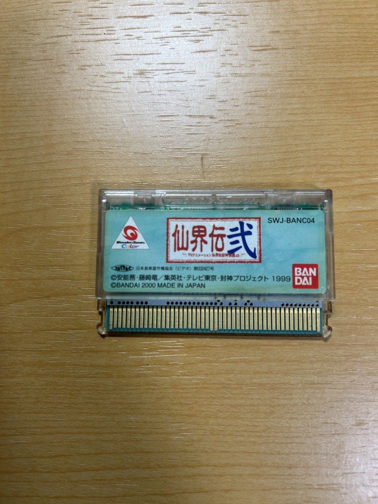
用意したもの
今回用意したものは、交換用のボタン電池と作業用のドライバーです。
- CR1616ボタン電池
- トルクスドライバー（カートリッジを開けるため）
- マイナスの精密ドライバー
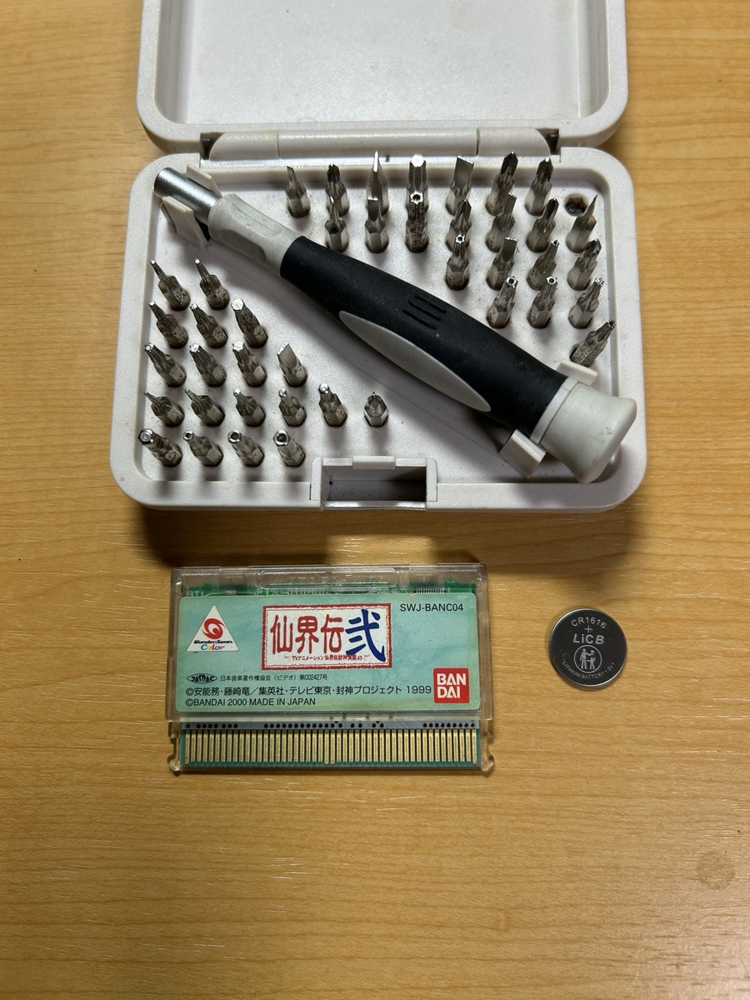
カートリッジを開けてみる
ケースを開けて、中の基板を確認してみます。
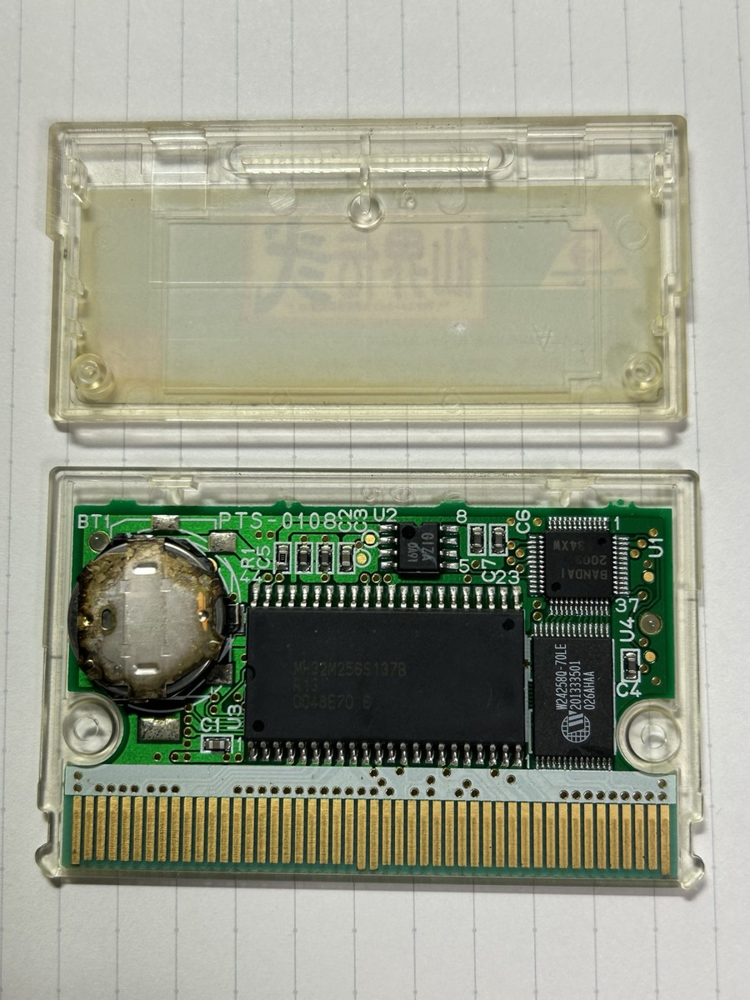
……なにこれ？
今までよく見てきた、タブ付きのボタン電池ではありません。
しかも電池の上にある金具は、かなり酸化しているように見えます。
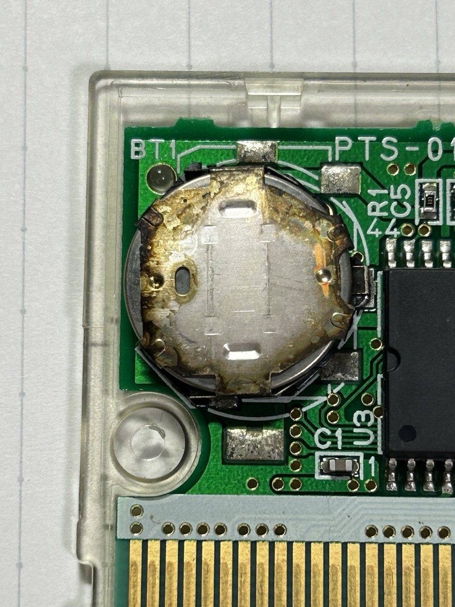
最初は「これ、どうやって交換するんだろう？」となりました。
インターネットで調べてみると、どうやらこれはボタン電池を差し込んで固定する 電池ホルダーのようです。
見慣れない形ではありますが、ハンダを使わずに電池交換できるのはありがたいですね。
古いCR1616を取り外す
電池を取り外す前に、ホルダーの構造を確認します。
金属部分を大きく曲げてしまうと破損しそうなので、今回は必要最低限だけ動かすようにしました。
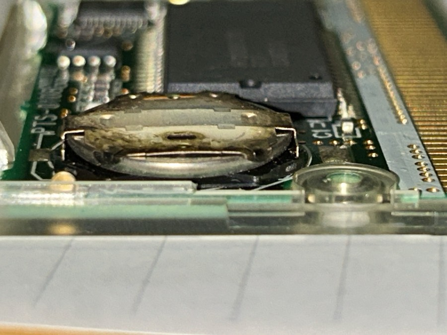
電池の上側と金属の押さえ部分の隙間にマイナスの精密ドライバーを差し込み、
金具をほんの少しだけ持ち上げます。
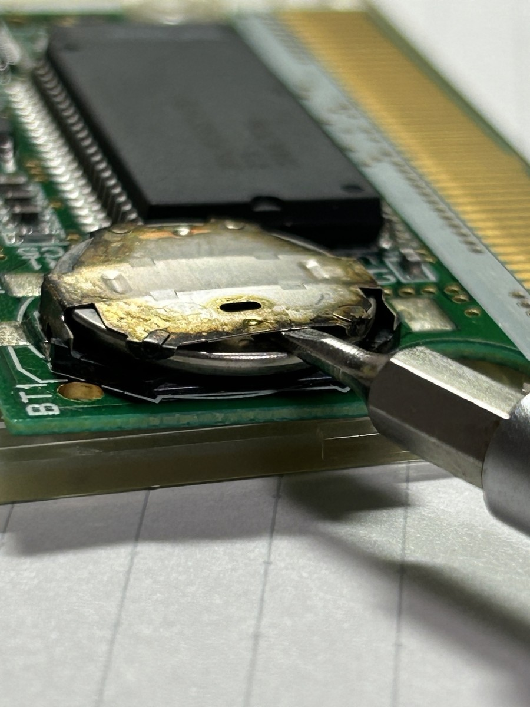
その状態で画像の奥側から手前方向へ電池を押すと、CR1616が少しずつスライドしてきます。
無理に金具を起こす必要はなく、電池が通れる程度に浮かせるだけで大丈夫でした。
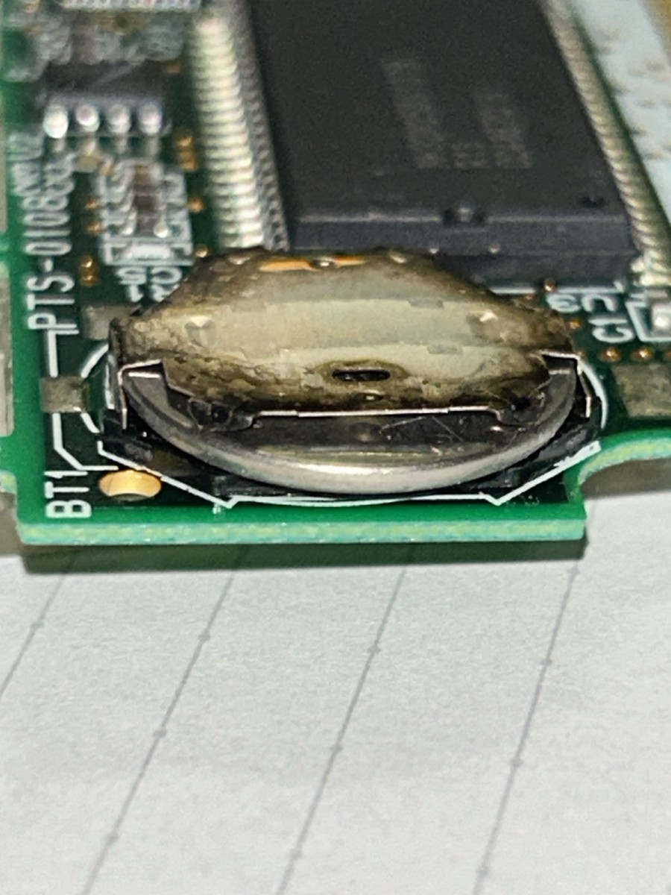
そのまま手前へ引き出せば、古いCR1616を取り外せます。
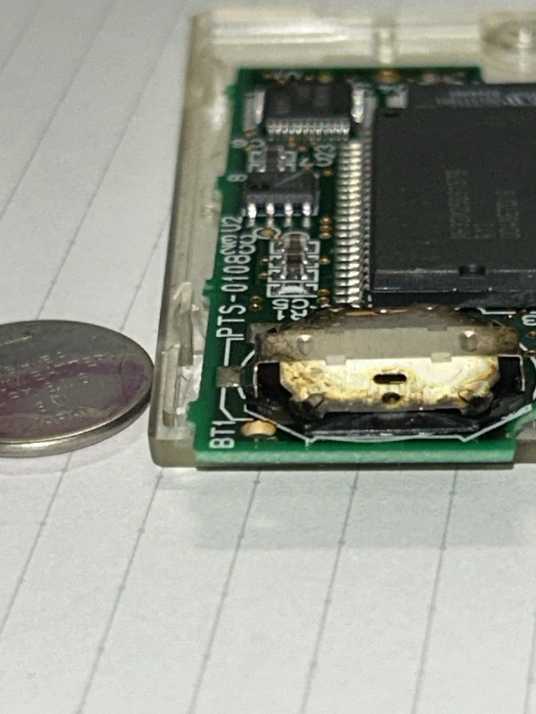
電池ホルダーは無水エタノールで軽く清掃しましたが、酸化している部分の見た目はほとんど変わりませんでした。
今回は破損させる方が怖かったので、無理な研磨などは行っていません。
新しいCR1616を取り付ける
新しい電池は、＋側を上向きにして取り付けます。
取り外したときとは逆に、ホルダーへ横からゆっくり差し込んでいきます。
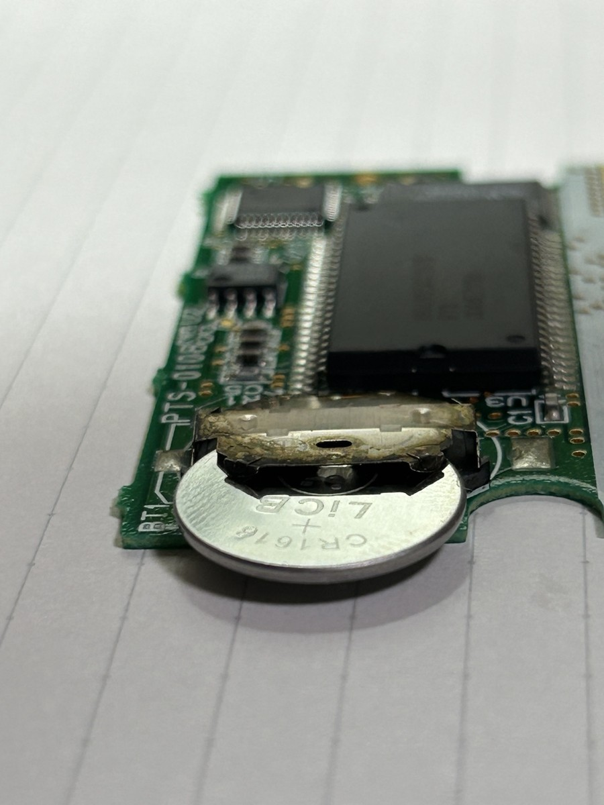
奥まで入れば取り付け完了です。
ホルダーの金具が電池を押さえていて、大きく浮いたりズレたりしていないことも確認しました。
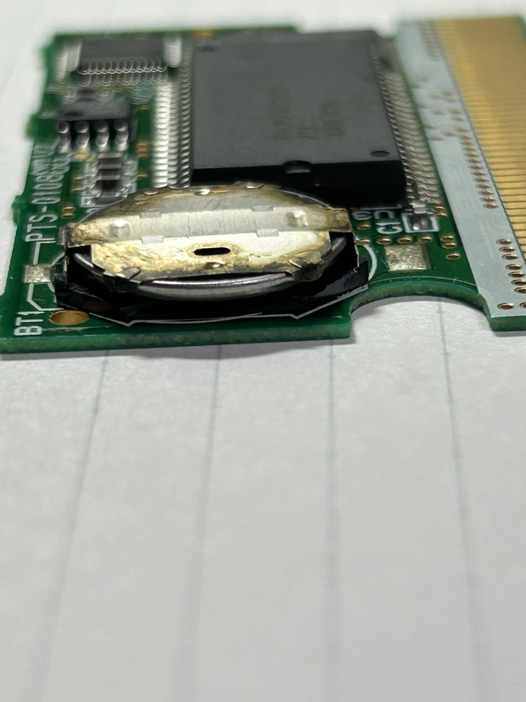
セーブデータが残るか確認
最後にワンダースワン実機で動作確認します。
ゲームを起動して一度セーブしたあと、電源をOFF。
その後もう一度電源を入れて確認してみると――
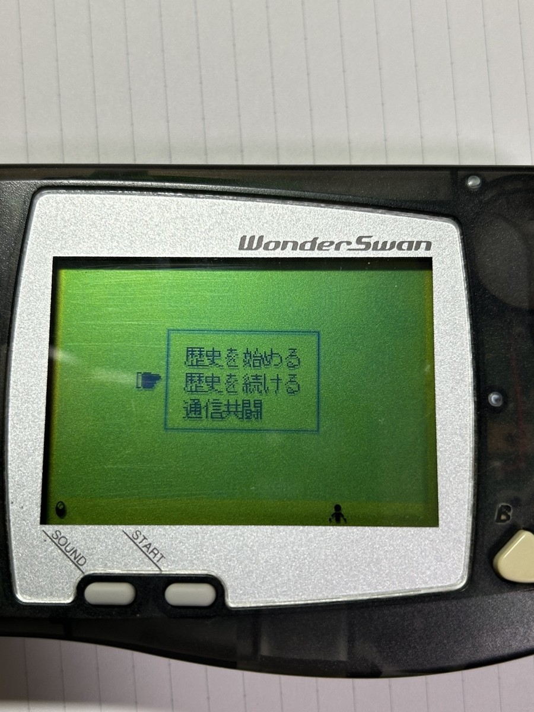
ちゃんとセーブデータが残っていました。
これで電池交換完了ですね。
『仙界伝弐』のバックアップ電池がホルダーに入っているのには驚きましたが、
構造と手順さえ分かってしまえば、意外と簡単に交換できました。
おまけ
ちなみに、同じく電池切れしていた『SDガンダム GGENERATION GATHER BEAT』も開けてみました。
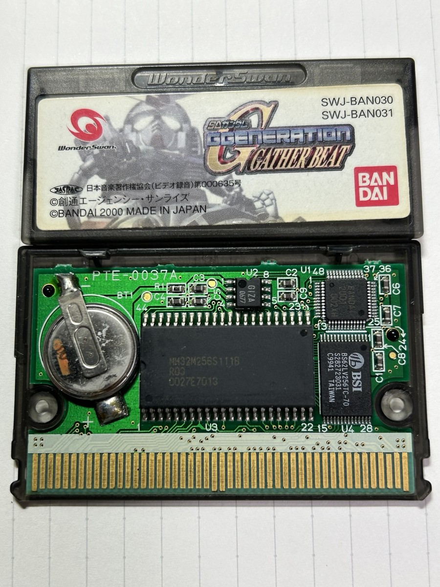
こちらは見慣れたタブ付きのボタン電池でした。
同じワンダースワンのソフトでも、電池の取り付け方は違うんですね。
【作品について】
本ページで扱う作品名・各種権利は、各権利者に帰属します。
『仙界伝弐 ～TVアニメーション仙界伝封神演義より～』（ワンダースワン）
©安能務・藤崎竜／集英社・テレビ東京・封神プロジェクト 1999
©BANDAI 2000
最終更新日：2026/09/13